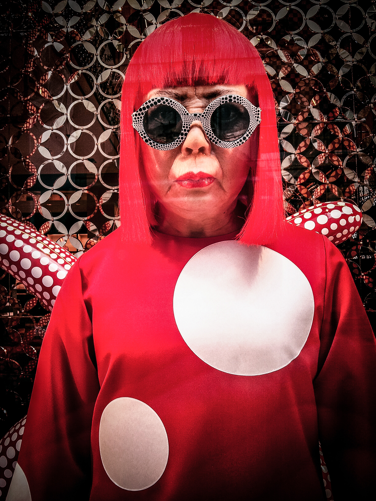
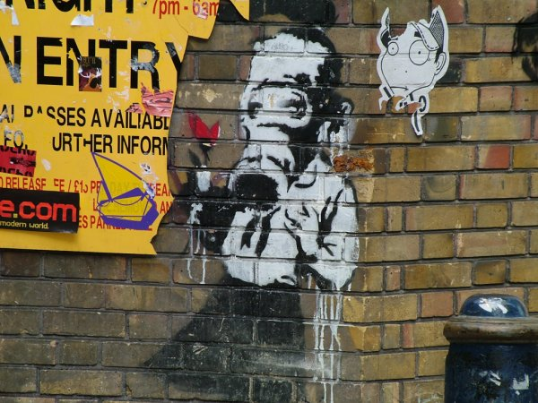
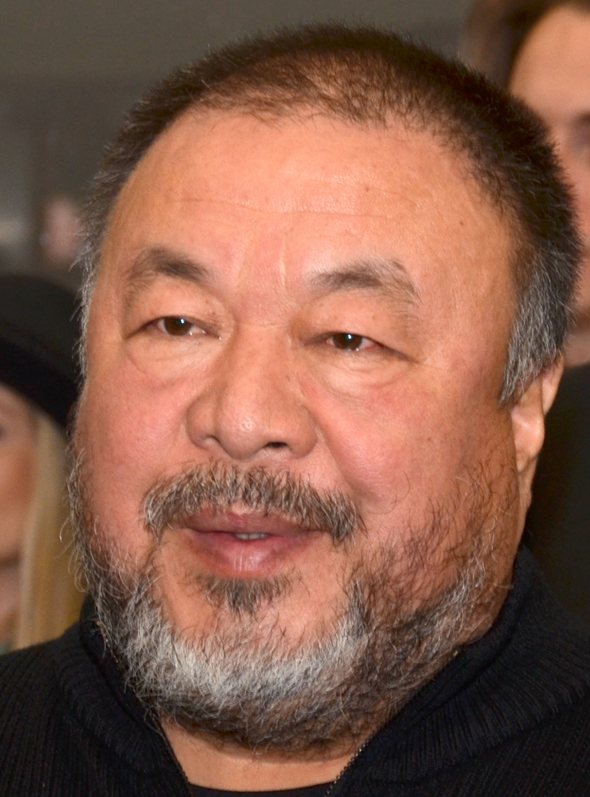

Yayoi Kusama

Yayoi Kusama is a Japanese contemporary artist who works primarily
in sculpture and installation but is also active in painting,
performance, film, fashion, poetry, fiction, and other arts. She is
known for her iconic polka-dot patterns and infinity rooms. Kusama's
work has been featured in numerous exhibitions worldwide, and she
continues to create art today.
Banksy

Banksy is an anonymous England-based street artist, political
activist, and film director. His satirical street art and subversive
epigrams combine dark humor with graffiti executed in a distinctive
stenciling technique. Banksy's works of political and social
commentary have been featured on streets, walls, and bridges of
cities throughout the world.
Ai Weiwei

Ai Weiwei is a Chinese contemporary artist and activist who works in
sculpture, installation, photography, film, architecture, and social
criticism. He is known for his use of unconventional materials and
his engagement with political and social issues, particularly those
relating to China. Some of Ai Weiwei's most famous works include the
Sunflower Seeds installation and the Bird's Nest Olympic Stadium in
Beijing.